BCGUI Functionality#
What is BCGUI#
BCGUI (BETA C Graphical User Interface) is a powerful and versatile library of GUI functions. It is meant to help script users build windows that consist of any type of graphical interface, like lineEdits, comboBoxes, checkBoxes, Lists etc, in order to interact easier and more efficiently with ANSA entities.
BCGUI structure and philosophy#
The BCGUI entities are divided in 3 categories of classes; the widgets, the layouts and the items. These classes will be extensively described in the following chapters.
Widget classes or widgets#
This category includes all the important GUI entities that are visible and manageable by the user, like windows, buttons, combo boxes, etc. Its most important functions are described below:
BCWindow
Creates a window that may hold any other widget, layout or item. It is the highest-level widget that can be created by the BCGUI library. A vertical layout is created by default.
BCLineEdit
Creates an one-line text editor.
BCCheckBox
Creates a check box with a text label on its right.
BCComboBox
Creates a drop down list, with options to choose from.
BCPushButton
It is a button that can perform an action on click or on toggle.
A simple ‘BCWindow’ with a ‘BCLineEdit’, a ‘BCCheckBox’, a ‘BCComboBox’ and ‘BCPushButton’ is shown below:
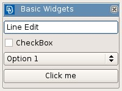
BCFrame
The ‘BCFrame’ class creates a flexible visual box which can obtain several shadow styles and accommodate other widgets. A layout must be set in a ‘BCFrame’ since they do not have one by default. For placing widgets inside, vertically or horizontally, use functions BCVBoxCreate or BCHBoxCreate respectively.
BCLabel
Creates a text or image display.
BCLabelTicker
Creates an auto-scrolling label.
BCSpinBox
Creates a widget that allows the user to choose a value, either by clicking the up/down buttons to increase/decrease the value currently displayed, or by typing the value directly into it.
BCSeparator
Creates a thin line to separate widgets.
BCSlider
Creates a vertical or horizontal widget for controlling a bounded value. It lets the user move a slider along a horizontal or vertical groove and translates the slider’s position into an integer value within the defined range.
BCStatusBar
Provides the option to easily change the size of the BCWindow.
An example of using BCFrame, BCSeparator, BCLabel, BCSpinBox, BCSlider and BCStatusBar is shown below:
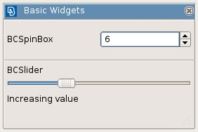
BCListView
It implements a list/tree view. It can display and control a hierarchy of multi-column items and provides the ability to add new items at any time.
BCItemViewInfoBox
Creates a horizontal line with three labels, placed at the bottom of a ListView or an ItemView, providing information about the total and the selected items, as well as custom texts.
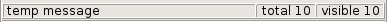
BCWidgetStack
Creates a stack of widgets of which only one (the top most) is visible at any time.
BCSplitter
Creates a splitter widget that lets the user control the size of child widgets, by dragging the boundary between the children.
In the following image a ‘BCSplitter’ separates a ‘BCListView’ from a ‘BCButtonGroup’. On the bottom left corner of the window there is a ‘BCWidgetStack’, which includes different label widgets. The selection of a ‘BCListViewItem’ from the ‘BCListView’ raises a different ‘BCLabel’ (i.e. widget) on the widget area. For example, when the item ‘Preference 5’ is selected, the label containing the text ‘Preference 5 is selected.’ is raised to the top of the widget stack.
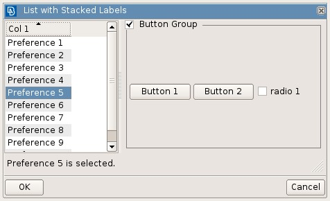
BCTabWidget
Creates a ‘tabBar’ with a specific number of tabs and a ‘page area’ below the tabs. Each tab is associated with a different page. Only the current tab’s page is shown in the page area; all the other tabs’ pages are hidden.
BCTextEdit
Creates a powerful single-page rich text editor. ‘BCTextEdit’ allows the user to perform a variety of actions, like undo/redo, <Ctrl+C> for copy, <Ctrl+V> for paste, etc. It works on paragraphs and characters. A paragraph is a formatted string which is word-wrapped to fit into the width of the widget. By default when reading plain text, one newline signify a paragraph. A document consists of zero or more paragraphs, indexed from 0. Characters are indexed on a per-paragraph basis, also indexed from 0.
In the folowing image, a ‘BCTabWidget’ was created with 2 tabs. Each tab holds a ‘BCTextEdit’.
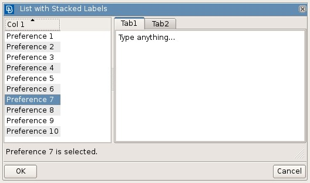
BCTextBrowser
Provides a BCTextEdit with hypertext navigation.
BCTable
The BCTable class creates a flexible editable (spreadsheet-like) table widget. Other widgets can be inserted in a ‘BCTable’ as well.
In the following image there is a ‘BCTable’ with vertical and horizontal headers. Rows and columns can be selected through the headers.
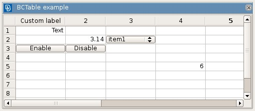
BCPopupMenu
Creates a pull down menu of choices.
BCWizard
Creates a typical wizard dialog window, consisting of a custom number of pages. Each page of the BCWizard is a BCFrame, which can contain any other widget. The user can move back and forth in the BCWizard’s pages, by using the widget’s ‘Back’ and ‘Next’ built-in buttons.
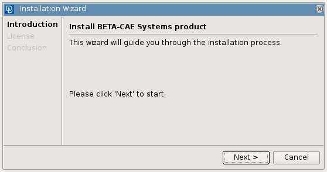
BCWidgetExpand
It is a widget used to save space in forms. Use this class to provide expansion functionality to any widget, without having to resize the parent window. The class is simple to use and really useful in widgets applying a scroll bar (such as ‘BCListViews’ or ‘BCTextEdits’). Drag the mouse towards the direction where the widget must be expanded, while holding ‘Shift’ and middle mouse button. The widget remains expanded as long as the mouse cursor remains inside it.
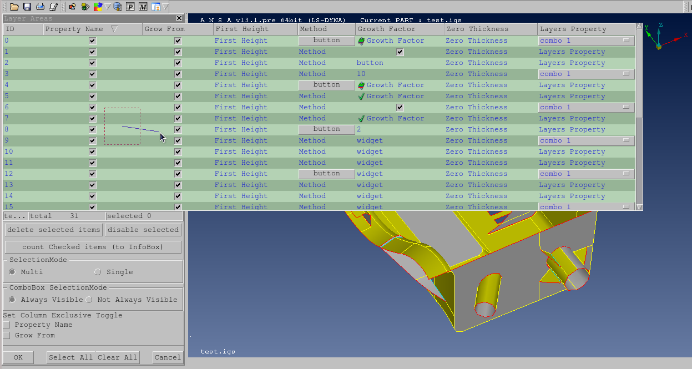
BCLineEditPath
Creates a ‘BCLineEditPath’, which is a ‘BCFrame’ that contains an editable history ‘BCComboBox’, a “Browse” ‘BCToolButton’ and a “Clear history” ‘BCToolButton’. These paths will be available any time ANSA is used. The BCLineEditPath can be a “files”, “folders” or “everything” type and it can be used with “open” or “save as” mode.
BCTimer
The ‘BCTimer’ provides timer signals and single-shot timers.
BCProgressBar
Creates a Progress Bar, which is used to give the user an indication of the progress of an operation and to reassure him that the application is still running.
Layout classes or layouts#
These are the invisible entities that manage the layouts of widgets.
BCBoxLayout
The ‘BCBoxLayout’ is one of the most useful tools for managing geometry. It consists of a rectangular box having transparent outside border which can obtain horizontal or vertical orientation for it’s children (either widgets or other layouts). It is usually used as a parent in widgets creation.
BCGridLayout
The ‘BCGridLayout’ class lays out widgets in a grid. It occupies the available space, divides it up into rows and columns, and puts each widget it manages into the correct cell.
BCLayouts are used to define the widgets’ placement inside a ‘BCWindow’. A ‘BCWindow’ has by default a ‘BCBoxLayout’ with vertical orientation. This means that all the children of the ‘BCWindow’ or its ‘BCBoxLayout’ will be placed one under the other, according to the order they have been created. In the following example, children can be either widgets (the ‘OK’ and ‘Cancel’ BCPushButtons) or other layouts (the horizontal ‘BCBoxLayout’ and the ‘BCGridLayout’).
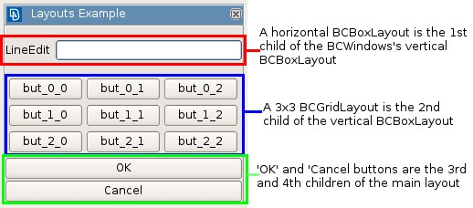
Items#
BCSpacer
Creates a blank space in a layout. It can be extended to all directions, according to the default parameters.
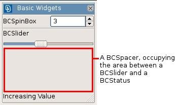
BCListViewItem and BCCheckListItem
These two items constitute the content of a ‘BCListView’. They may belong to the ‘BCListView’ directly (top-level items), or to other items, if hierarchy is allowed. Controllable widgets can be added to them, like ‘checkBoxes’, ‘comboBoxes’ and ‘buttons’.
General remarks#
The creation of graphical interface with BCGUI may include any of the above widgets, layouts or items, following the parent-child logic. This means that a BCGUI entity is constructed as a child of another one. In this way the relation, i.e. the placement and the dependencies of each entity, can be easily defined. Actions like showing, hiding or destroying a parent widget, automatically are applied recursively to all its children.
The ‘BCWindow’ is the highest level widget a user can create in script and it is automatically set as parent.
Pseudocode for a simple BCWindow
w = guitk.BCWindowCreate()
le = guitk.BCLineEditCreate(w) #le has parent w
f = guitk.BCFrameCreate(w) #f has parent w and placed below le
l = guitk.BCBoxLayoutCreate(f) #l has parent f
b1 = guitk.BCPushButtonCreate(l) #b1 has parent l
b2 = guitk.BCPushButtonCreate(l) #b2 has parent l and will be placed next
#to or below b1, according l's orientation.
Here is the pseudocode for a layout example:
Pseudocode for layouts example
w = guitk.BCWindowCreate()
horizontal = guitk.BCBoxLayoutCreate(w) #horizontal layout is the 1st child
guitk.BCLabelCreate(horizontal) #label belongs to horizontal
guitk.BCLineEdit(horizontal) #lineEdit is horizontal's 2nd child
grid = guitk.BCGridLayout(w) #grid layout is placed below horizontal
for row in range(3):
for col in range(3):
guitkBCPushButtonCreate(grid, row, col) #Create button at (row, col)
ok = guitk.BCPushButtonCreate(w) #'ok' button is BCWindow's 3rd child
cancel = guitk.BCPushButtonCreate(w) #'cancel' button is BCWindow's 4th child
BCGUI functions were built in a way to be immediately comprehensible, even by beginner users. Help for all BCGUI functions (prototype, arguments, operation etc.) can be found in the script editor’s help section.
The name of a BCGUI function consists of the class it belongs to (e.g. BCLineEdit) plus the action performed on an object of this class (e.g. SetText). Thus, the function name is BCLineEditSetText. If a function does not begin with a class name, it means that it is a general function, applicable to all widgets and layouts (not items). For example, the BCName function returns the name that may have been set to a widget or layout by the BCSetName. Also, in the case of ‘BCPushButtons’ and ‘BCToolButtons’, there are many ‘BCButton…’ functions, applicable to both classes of buttons.
From the above example it is obvious to conclude that all the BCGUI functions start with BC, while each different word starts with a capital letter.
Generally, the first argument of every function is the widget or the layout which an action will be performed, or its parent in the case of ‘BC…Create’ functions.
BCGUI Examples#
In this section some real code examples are presented.
A simple BCWindow#
The first example is the code implementation of the pseudocode presented in the previous section:
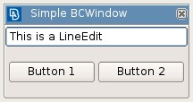
from ansa import guitk
def main():
w = guitk.BCWindowCreate('Simple BCWindow', guitk.constants.BCOnExitDestroy)
le = guitk.BCLineEditCreate(w, 'This is a LineEdit')
f = guitk.BCFrameCreate(w)
l = guitk.BCBoxLayoutCreate(f, guitk.constants.BCHorizontal)
b1 = guitk.BCPushButtonCreate(l, "Button 1", None, 0)
b2 = guitk.BCPushButtonCreate(l, "Button 2", None, 0)
guitk.BCShow(w)
In order for a widget to be displayed, the function BCShow must be called, having as argument the widget. This will trigger a recursive call for the widget’s children as well. In the example above, only one ‘BCShow’ call for the ‘BCWindow’ ‘w’ is enough to show everything that it contains. The ‘BCOnExitDestroy’ option used in ‘BCWindowCreate’ means that when the window closes (by pressing escape <esc>, return or the[x] button), it will be destroyed. The other available option is the ‘BCOnExitHide’ but it is strongly recommended to avoid using it, since a wrong usage may lead to memory leaks.
Note
A ‘BCWindow’ is good to have a unique name. Any information about the window (e.g size, position, values of its widgets etc) will be stored in ANSA.xml under this name. However, the ‘BCWindow’s’ name must not be confused with the name of the title bar, which can be changed by using the ‘BCSetCaption’.
Creating and using callback functions#
In the previous example a ‘BCWindow’ with 2 “dummy” buttons was created, i.e. on button click no operation has been defined. This is where the user needs to define callback functions, i.e. functions that will be called when a user interacts with widgets or items.
Callback functions are defined as normal script functions and their name is passed as an argument to the appropriate BCGUI functions, followed by a user argument of any data type (float, string, integer, matrix etc). Help about BCGUI callback functions (prototype, arguments etc.) can be found at the end of the description section of each BCGUI function that uses a callback as an argument.
In the following example, a ‘BCWindow’ is created with 2 ‘BCLineEdits’ and a ‘BCPushButton’. The upper ‘BCLineEdit’ accepts doubles as input and when <Enter> is pressed the square root calculation of the current value is triggered, while the calculated value is set to the lower (output) ‘BCLineEdit’. When the ‘BCPushButton’ is pressed, the calculated value is printed in the Output window. In both callback functions the output ‘BCLineEdit’ is passed as data.
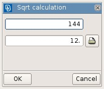
from ansa import guitk
import math
def calculateFun(le, data):
newVal = math.sqrt(guitk.BCLineEditGetDouble(le)) #Calculation of the square root
guitk.BCLineEditSetDouble(data, newVal) #Set calculated value to the output lineEdit
return 1 # Returns 1 so that the window will remain open.
def printFun(button, data):
textToPrint = 'The calculated value is ' + str(guitk.BCLineEditGetDouble(data))
print(textToPrint) #Just print the value shown in output lineEdit
def main():
w = guitk.BCWindowCreate('Sqrt calculation', guitk.constants.BCOnExitDestroy)
grid = guitk.BCGridLayoutCreate(w, 2, 2)
input = guitk.BCLineEditCreateDouble(grid, 0)
guitk.BCGridLayoutAddWidget(grid, input, 0, 0, guitk.constants.BCAlignLeft + guitk.constants.BCAlignVCenter)
output = guitk.BCLineEditCreateDouble(grid, 0)
guitk.BCGridLayoutAddWidget(grid, output, 1, 0, guitk.constants.BCAlignLeft + guitk.constants.BCAlignVCenter)
guitk.BCLineEditSetReadOnly(output, 1);
guitk.BCLineEditSetEnterPressedFunction(input, calculateFun, output)
butPrint = guitk.BCPushButtonCreate(grid, '', printFun, output)
guitk.BCButtonSetPixmapFile(butPrint, "print_16.png")
guitk.BCGridLayoutAddWidget(grid, butPrint, 1, 1, guitk.constants.BCAlignCenter)
guitk.BCLineEditSetMinimumWidth(input, guitk.constants.BCSizeLarge) #Make the LineEdits Large
guitk.BCLineEditSetMinimumWidth(output, guitk.constants.BCSizeLarge)
guitk.BCGridLayoutSetColStretch(grid, 0, 1) #The 1st column should take all
guitk.BCGridLayoutSetColStretch(grid, 1, 0) #the expansion.
guitk.BCDialogButtonBoxCreate(w)
guitk.BCShow(w)
The complete source code of this example can be found here BCGUI - Square Root Calculation
Moving more data around#
An alternative way to pass more data to callback functions is to use the BCSetUserDataKey and BCGetUserDataKey functions. The first one associates key - data pairs (of types string-element) to a widget or layout and the second one retrieves the data using the corresponding string keys.
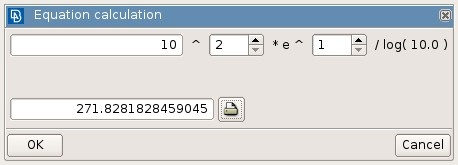
from ansa import guitk
import math
def calculateEquation(data): #Retrieving widgets from BCWindow w (==data)
input = guitk.BCGetUserDataKey(data, "input")
sp1 = guitk.BCGetUserDataKey(data, "sp1")
sp2 = guitk.BCGetUserDataKey(data, "sp2")
#Calculation
d = guitk.BCLineEditGetDouble(input);
if d <= 0 or d == 1:
result = None
else:
i_1 = guitk.BCSpinBoxGetInt(sp1)
i_2 = guitk.BCSpinBoxGetInt(sp2)
result = math.pow(d, i_1) * math.exp(i_2) / math.log10(d)
guitk.BCSetUserDataKey(data, "result", result)
def lineEditChangedFun(le, text, data):
#le is the input lineEdit; data is the w BCWindow
lab = guitk.BCGetUserDataKey(data, "lab")
d = guitk.BCLineEditGetDouble(le)
if d == guitk.constants.blank: #if the input field is blank
d = 0.0
guitk.BCLabelSetText(lab, str(d))
calculateEquation(data)
return 0
def spinBoxChangedFun(sp, val, data):
#sp here could be sp1 or sp2 BCSpinBoxes; data is the w BCWindow
calculateEquation(data)
return 0
def printFun(button, data):
#button here is butPrint; data is the w BCWindow
#Just print the value shown in output lineEdit
input = guitk.BCGetUserDataKey(data, "input")
output = guitk.BCGetUserDataKey(data, "output")
lab = guitk.BCGetUserDataKey(data, "lab")
result = guitk.BCGetUserDataKey(data, "result")
d = str(guitk.BCLineEditGetDouble(input))
if result is None:
guitk.BCLineEditSetDouble(output, guitk.constants.blank)#Give blank as output
textToPrint = "The input value cannot be negative or 1"
else:
guitk.BCLineEditSetDouble(output, result)
textToPrint = "The calculated value is " + str(result)
print(textToPrint)
def main():
w = guitk.BCWindowCreate("Equation calculation", guitk.constants.BCOnExitDestroy)
l1 = guitk.BCBoxLayoutCreate(w, guitk.constants.BCHorizontal)
input = guitk.BCLineEditCreateDouble(l1, 1)
guitk.BCLabelCreate(l1, " ^ ")
sp1 = guitk.BCSpinBoxCreate(l1)
guitk.BCSpinBoxSetMinValue(sp1, 2)
guitk.BCSpinBoxSetMaxValue(sp1, 15)
guitk.BCLabelCreate(l1, " * e ^ ")
sp2 = guitk.BCSpinBoxCreate(l1)
guitk.BCSpinBoxSetMinValue(sp2, 1)
guitk.BCSpinBoxSetMaxValue(sp2, 10)
guitk.BCLabelCreate(l1, " / log(")
lab = guitk.BCLabelCreate(l1, guitk.BCLineEditGetText(input))
guitk.BCLabelCreate(l1, ")")
guitk.BCSpacerCreate(w)
l2 = guitk.BCBoxLayoutCreate(w, guitk.constants.BCHorizontal)
output = guitk.BCLineEditCreateDouble(l2, 0)
guitk.BCLineEditSetReadOnly(output, 1)
butPrint = guitk.BCPushButtonCreate(l2, '', printFun, w) #You can also set the widget before the data assignment
guitk.BCButtonSetPixmapFile(butPrint, "print_16.png")
guitk.BCSpacerCreate(l2) #Horizontal spacer. Keeps output and butPrint to the left
guitk.BCSetUserDataKey(w, "input", input)
guitk.BCSetUserDataKey(w, "sp1", sp1)
guitk.BCSetUserDataKey(w, "sp2", sp2)
guitk.BCSetUserDataKey(w, "lab", lab)#We hold the lab in order to change its text.
guitk.BCSetUserDataKey(w, "output", output)
guitk.BCSetUserDataKey(w, "result", None)#create a variable to hold the result
guitk.BCSpinBoxSetValueChangedFunction(sp1, spinBoxChangedFun, w)
guitk.BCSpinBoxSetValueChangedFunction(sp2, spinBoxChangedFun, w)
guitk.BCLineEditSetTextChangeFunction(input, lineEditChangedFun, w)
guitk.BCDialogButtonBoxCreate(w)
guitk.BCShow(w)
The complete source code of this example can be found here BCGUI - Equation Calculation
Creating a BCWizard#
A Wizard dialog window can be implemented by creating a ‘BCWizard’ object and adding ‘BCFrame’ widgets as its pages.
Firstly, the function ‘BCWizardCreate’ is used to create the main wizard window, which is the object to hold all the wizard pages.
wizard = guitk.BCWizardCreate("Example Wizard", guitk.constants.BCOnExitDestroy)
By using the function ‘BCWizardAddPage’, the user can add a specified ‘BCFrame’ widget as a new page, while defining the page’s navigation text, title and info text. The ‘BCFrame’ widget can contain any other known BCGui widgets.
guitk.BCWizardAddPage(wizard, CreatePage1(wizard), "Introduction", "Install BETA-CAE Systems product")
def CreatePage1(wizard):
page = guitk.BCFrameCreate(wizard)
guitk.BCBoxLayoutCreate(page, guitk.constants.BCVertical)
guitk.BCLabelCreate(page, "This wizard will guide you through the installation process.")
guitk.BCSpacerCreate(page)
guitk.BCLabelCreate(page, "Please click 'Next' to start.")
guitk.BCSpacerCreate(page)
return page
The function ‘BCWizardSetCurrentPageChangedFunction’, can be used to define the callback function to be called when the current page of the wizard has changed.
guitk.BCWizardSetCurrentPageChangedFunction(wizard, wizardCurrentPageChanged, data)
The user can also define the accept and reject functions of the ‘BCWizard’ window, just like a plain ‘BCWindow’, by using the functions ‘BCWindowSetAcceptFunction’ and ‘BCWindowSetRejectFunction’.
The following images demonstrate a simple ‘BCWizard’.
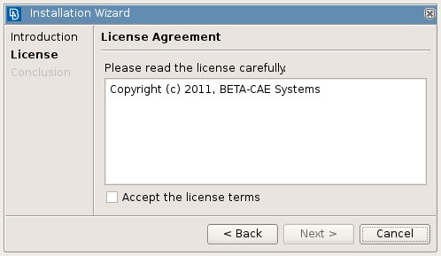
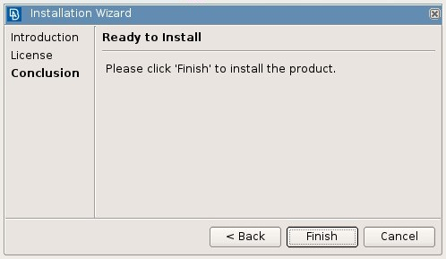
The source code used to construct this ‘BCWizard’ is shown below:
import ansa
from ansa import guitk
def SetLicenseTermsAccepted(cb, state, wizard):
guitk.BCWizardSetNextButtonEnabled(wizard, state)
return 0
def WizardFinished(wizard, data):
print("Wizard is about to finish (Of course, nothing will be installed)")
return 1
def WizardCancelled(wizard, data):
print("Wizard is about to cancel.")
return 1
def wizardCurrentPageChanged(wizard, oldIndex, newIndex, data):
cb = guitk.BCGetUserDataKey(wizard, "acceptCheckBox")
if oldIndex == 0 and newIndex == 1:
guitk.BCCheckBoxSetChecked(cb, False)
guitk.BCWizardSetNextButtonEnabled(wizard, False)
def CreatePage1(wizard):
page = guitk.BCFrameCreate(wizard)
guitk.BCBoxLayoutCreate(page, guitk.constants.BCVertical)
guitk.BCLabelCreate(page, "This wizard will guide you through the installation process.")
guitk.BCSpacerCreate(page)
guitk.BCLabelCreate(page, "Please click 'Next' to start.")
guitk.BCSpacerCreate(page)
return page
def CreatePage2(wizard):
page = guitk.BCFrameCreate(wizard)
guitk.BCBoxLayoutCreate(page, guitk.constants.BCVertical)
guitk.BCLabelCreate(page, "Please read the license carefully.")
terms = guitk.BCTextEditCreate(page, "Copyright (c) 2011, BETA-CAE Systems")
guitk.BCTextEditSetReadOnly(terms, True)
cb = guitk.BCCheckBoxCreate(page, "Accept the license terms")
guitk.BCSpacerCreate(page)
guitk.BCSetUserDataKey(wizard, "acceptCheckBox", cb)
guitk.BCCheckBoxSetToggledFunction(cb, SetLicenseTermsAccepted, wizard)
return page
def CreatePage3(wizard):
page = guitk.BCFrameCreate(wizard)
guitk.BCBoxLayoutCreate(page, guitk.constants.BCVertical)
guitk.BCLabelCreate(page, "Please click 'Finish' to install the product.")
guitk.BCSpacerCreate(page)
return page
def main():
wizard = guitk.BCWizardCreate("Installation Wizard", guitk.constants.BCOnExitDestroy)
guitk.BCWizardAddPage(wizard, CreatePage1(wizard), "Introduction", "Install BETA-CAE Systems product")
guitk.BCWizardAddPage(wizard, CreatePage2(wizard), "License", "License Agreement")
guitk.BCWizardAddPage(wizard, CreatePage3(wizard), "Conclusion", "Ready to Install")
guitk.BCWizardSetCurrentPageChangedFunction(wizard, wizardCurrentPageChanged, None)
guitk.BCWindowSetAcceptFunction(wizard, WizardFinished, 0)
guitk.BCWindowSetRejectFunction(wizard, WizardCancelled, 0)
guitk.BCShow(wizard)
The complete source code of this example can be found here BCGUI - Wizard Creation
Interacting with ANSA entities#
In this example a ‘BCListView’ is created and filled with all the PSHELLs found in the current ANSA database. If there are too many PSHELLs to process, an increasing ‘BCProgressBar’, that appears in place of a ‘BCLineEditPath’, allows to see the progress made. After the procedure, the ‘BCProgressBar’ is replaced again by the ‘BCLineEditPath’. This effect is made possible by using a ‘BCWidgetStack’.
The items shown for each PSHELL are:
Element visibility
Color
PID
Name
Element number
MID
FROZEN_ID
The visibility of the PSHELLs can be controlled by the checkboxes. Double click on an item will open its entity card for editing, while on close the item will be updated. Right click on an item removes it completely from list, without deleting the PSHELL itself. Note the use of a ‘BCTimer’ in this case.
The field ‘Name’ can be changed through the list. The field ‘MID’ can also be changed through the list, whereas a check is executed to determine if the new MID is valid. If not, the old ‘MID’ is restored and a warning is displayed on the first section of the ‘BCItemViewInfoBox’, at the bottom of the ‘BCListView’. A multi-condition filter is set to the list.
The ‘BCListView’ is inserted in a ‘BCWidgetExpand’ widget in order to be expanded to its full size, without altering the size of its containing ‘BCWindow’.
A ‘BCLineEditPath’ is set on top of the list, which can be used to load new ANSA databases that will trigger a list update.
import ansa
from ansa import guitk
from ansa import constants
from ansa import base
from ansa import session
#Column numbers declaration
COL_NUMS = 7
CHECK_COL = 0
COLOR_COL = 1
PID_COL = 2
NAME_COL = 3
ELEMS_COL = 4
MID_COL = 5
FROZEN_COL = 6
LINE_EDIT_PATH_ID = 0
PROGRESS_BAR_ID = 1
def checkButtonPressedFun(item, state, data):
search_type = ("FACE", "SHELL")
pshell = guitk.BCListViewItemGetUserData(item)
shells = base.CollectEntities(constants.NASTRAN, pshell, search_type, True)
#change the visibility of the shells
if state:
base.And(pshell)
else:
base.Not(pshell)
#If the property has non-visible elements, uncheck button
if state and not len(shells):
guitk.BCListViewItemCheckableSetOn(item, False)
def renameFun(item, column, list_bc):
pshell = guitk.BCListViewItemGetUserData(item);
if column == NAME_COL: #Renaming PSHELL's Name
newName = guitk.BCListViewItemGetText(item, NAME_COL)
base.SetEntityCardValues(constants.NASTRAN, pshell, {"Name":newName})
elif column == MID_COL: #Resetting PSHELL's MID
newMID = guitk.BCListViewItemGetInt(item, MID_COL)
mats = base.CollectEntities(constants.NASTRAN, None, "MAT1", False)
i = 0
ids = []
for mat in mats:
ids.append(mat._id)
#Check if user inputed MID exists
if newMID in ids:
base.SetEntityCardValues(constants.NASTRAN, pshell, {"MID1": newMID})
else:
ret = base.GetEntityCardValues(constants.NASTRAN, pshell, ("MID1",))
guitk.BCListViewItemSetText(item, MID_COL, str(ret['MID1']))
info_box = guitk.BCGetUserDataKey(list_bc, 'info_box')
#Check if the user typed text or number
if newMID < guitk.constants.blank:
guitk.BCItemViewInfoBoxSetText(info_box, 0, "No material with id "+str(newMID)+" exists!")
else:
guitk.BCItemViewInfoBoxSetText(info_box, 0, "The material id must be an integer!")
def updateItem(list_bc, item):
search_type = ("FACE", "SHELL")
pshell = guitk.BCListViewItemGetUserData(item)
ret = base.GetEntityCardValues(constants.NASTRAN, pshell, ("PID", "MID1", "Name", "FROZEN_ID", "COLOR_R", "COLOR_B", "COLOR_G"))
shells = base.CollectEntities(constants.NASTRAN, pshell, search_type, True)
num = len(shells)
v = 0
for ent in shells:
if base.IsEntityVisible(ent):
v = 1
break
guitk.BCListViewItemCheckableSetOn(item, v)
guitk.BCListViewItemSetRectangleColor(item, COLOR_COL, ret['COLOR_R'], ret['COLOR_G'], ret['COLOR_B'])
guitk.BCListViewItemSetText(item, PID_COL, str(ret['PID']))
guitk.BCListViewItemSetText(item, NAME_COL, ret['Name'])
guitk.BCListViewItemSetText(item, ELEMS_COL, str(num))
guitk.BCListViewItemSetText(item, MID_COL, str(ret['MID1']))
guitk.BCListViewItemSetText(item, FROZEN_COL, ret['FROZEN_ID'])
guitk.BCListViewFilterUpdateComboBox(list_bc, FROZEN_COL)
def destroyItem(item):
#Just delete the item, not the PSHELL itself.
guitk.BCListViewItemDestroy(item)
return 0
def mouseClickFun(list_bc, mb, item, col, data):
if not item:
return 0
if mb == guitk.constants.BCRightButton:
guitk.BCTimerSingleShot(0, destroyItem, item)
return 0
def doubleClickFun(list_bc, item, col, data):
if not item:
return 1
pshell = guitk.BCListViewItemGetUserData(item)
base.EditEntity(constants.NASTRAN, pshell)
updateItem(list_bc, item) #Update item after a possible editing.
return 1
def updateList(list_bc):
guitk.BCListViewClear(list_bc)
ws = guitk.BCGetUserDataKey(list_bc, 'ws')
pb = guitk.BCWidgetStackWidget(ws, PROGRESS_BAR_ID) #Getting the BCProgressBar with its id
guitk.BCWidgetStackRaiseId(ws, PROGRESS_BAR_ID)
guitk.BCProgressBarSetProgress(pb, 0)
search_type = ("PSHELL",)
pshells = base.CollectEntities(constants.NASTRAN, None, search_type, False)
guitk.BCProgressBarSetTotalSteps(pb, len(pshells))
search_type = ("FACE", "SHELL")
rename = (0, 0, 0, 3, 0, 2, 0)
for pshell in pshells:
shells = base.CollectEntities(constants.NASTRAN, pshell, search_type, True)
num = len(shells)
ret = base.GetEntityCardValues(constants.NASTRAN, pshell, ("PID", "MID1", "Name", "FROZEN_ID", "COLOR_R", "COLOR_G", "COLOR_B"))
titles = ["", "", str(ret['PID']), ret['Name'], str(num), str(ret['MID1']), ret['FROZEN_ID']]
item = guitk.BCListViewAddItem(list_bc, COL_NUMS, titles, rename)
guitk.BCListViewItemSetUserData(item, pshell)
guitk.BCListViewItemSetRectangleColor(item, COLOR_COL, ret['COLOR_R'], ret['COLOR_G'], ret['COLOR_B'])
guitk.BCListViewItemSetRenamedFunction(item, renameFun, list_bc)
#Check if current pshell is visible
v = False
if base.IsEntityVisible(pshell):
v=True
guitk.BCListViewItemSetCheckable(item, True)
guitk.BCListViewItemCheckableSetOn(item, v)
guitk.BCListViewItemCheckableSetToggledFunction(item, checkButtonPressedFun, None)
#Update progressBar
current = guitk.BCProgressBarProgress(pb)
guitk.BCProgressBarSetProgress(pb, current+1)
guitk.BCListViewFilterUpdateComboBox(list_bc, FROZEN_COL)
guitk.BCWidgetStackRaiseId(ws, LINE_EDIT_PATH_ID)
def onEnterFun(le, list_bc):
#Open file and update list
my_file = guitk.BCLineEditGetText(le)
print(my_file)
if my_file != base.DataBaseName():
session.New('blank')
base.Open(my_file)
updateList(list_bc)
return 1
def clearListFun(b, list_bc):
guitk.BCListViewClear(list_bc)
def main():
titles = ("Visible", "Color", "PID", "Name", "Elements", "MID1", "FROZEN_ID")
base.SetCurrentDeck(constants.NASTRAN)
w = guitk.BCWindowCreate("PIDs list", guitk.constants.BCOnExitDestroy)
#Create a splitter between the two widgets
spl = guitk.BCSplitterCreate(w, guitk.constants.BCVertical)
#Create a widgetStack to place a BCLineEditPath and a BCProgressBar
ws = guitk.BCWidgetStackCreate(spl)
lep = guitk.BCLineEditPathCreate(w, 1, base.DataBaseName(), 0, "ANSA_Example_lineEditPath")
guitk.BCWidgetStackAddWidget(ws, lep, LINE_EDIT_PATH_ID)
pb = guitk.BCProgressBarCreate(ws, 0)
guitk.BCWidgetStackAddWidget(ws, pb, PROGRESS_BAR_ID)
guitk.BCWidgetStackRaiseWidget(ws, lep);
#The list will be controlled by BCWidgetExpand we
we = guitk.BCWidgetExpandCreate(spl);
list_bc = guitk.BCListViewCreate(we, COL_NUMS, titles, 1)
guitk.BCWidgetExpandSetWidget(we, list_bc)
#Setting BCLineEditPath
combo = guitk.BCLineEditPathGetCombo(lep)
le = guitk.BCComboBoxGetLineEdit(combo)
guitk.BCLineEditSetExtentionsFilter(le, ["ansa"])
#The file selected by file manager will update the list, as well
guitk.BCLineEditPathSetDialogEnterEnabled(lep, 1)
guitk.BCLineEditPathSetEnterPressedFunction(lep, onEnterFun, list_bc)
#Set the alignment of data shown in each column.
guitk.BCListViewSetColumnAlignment(list_bc, PID_COL, guitk.constants.BCAlignRight)
guitk.BCListViewSetColumnAlignment(list_bc, ELEMS_COL, guitk.constants.BCAlignRight)
guitk.BCListViewSetColumnAlignment(list_bc, MID_COL, guitk.constants.BCAlignRight)
guitk.BCListViewSetColumnAlignment(list_bc, FROZEN_COL, guitk.constants.BCAlignCenter)
#Set the multi condition filter.
guitk.BCListViewSetFilterEnabled(list_bc, True)
guitk.BCListViewSetColumnDataTypes(list_bc, (guitk.constants.BCBool, guitk.constants.BCInvalid, guitk.constants.BCInt, guitk.constants.BCString, guitk.constants.BCInt, guitk.constants.BCInt, guitk.constants.BCBool))
guitk.BCListViewFilterSetColumnEnabled(list_bc, CHECK_COL, 0)
guitk.BCListViewFilterSetColumnEnabled(list_bc, COLOR_COL, 0)
guitk.BCListViewFilterSetComboBox(list_bc, FROZEN_COL)
#Set a BCItemViewInfoBox
info_box = guitk.BCItemViewInfoBoxCreate(w, list_bc)
guitk.BCSetUserDataKey(list_bc, "info_box", info_box)
#Set a double click function and a right click function
guitk.BCListViewSetDoubleClickedFunction(list_bc, doubleClickFun, 0)
guitk.BCListViewSetMouseClickedFunction(list_bc, mouseClickFun, 0)
guitk.BCSetUserDataKey(list_bc, "ws", ws) #We will need ws in updateList
updateList(list_bc)
ddb = guitk.BCDialogButtonBoxCreate(w)
clear = guitk.BCPushButtonCreate(ddb, "Clear list", clearListFun, list_bc)
guitk.BCDialogButtonBoxAddButton(ddb, clear)
guitk.BCShow(w)
The complete source code of this example can be found here BCGUI - PIDs List
When calling the main function of the above script, the ‘BCWindow’ containing the ‘BCListView’ and other widgets is created, showing the PSHELLs of the current database. It is then docked by the user to the left docking area and resized to minimum width, in order to save space for the drawing area.
The use of the ‘BCWidgetExpand’ tool is shown in the following image:
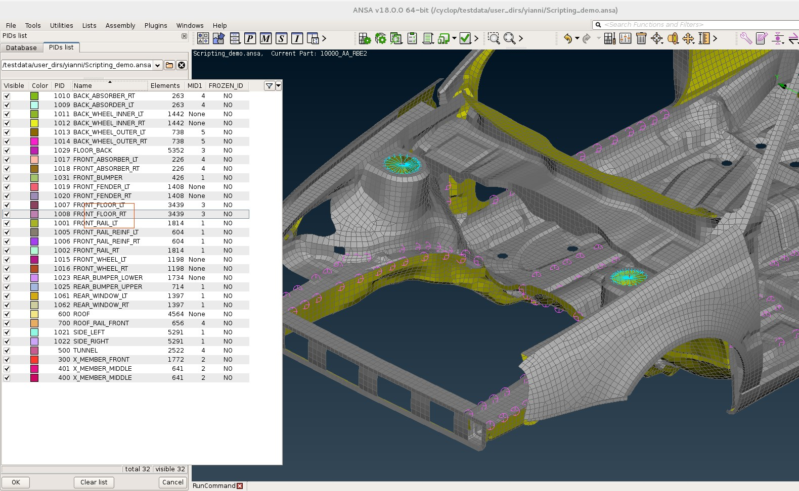
The PSHELLs visibility can be controlled through the checkboxes on the first column of the ‘BCListView’:
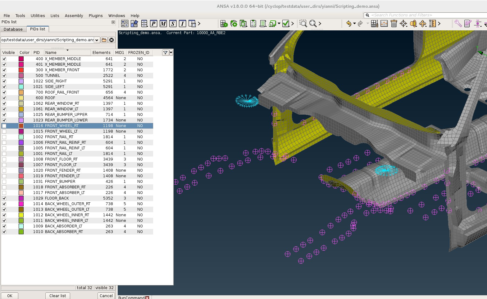
The name of a PSHELL can be simply changed by clicking on its name on the ‘BCListView’:
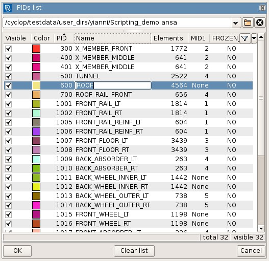
The same can be applied to the MID attribute of a PSHELL. This time there is also a procedure checking if the new MID is valid:
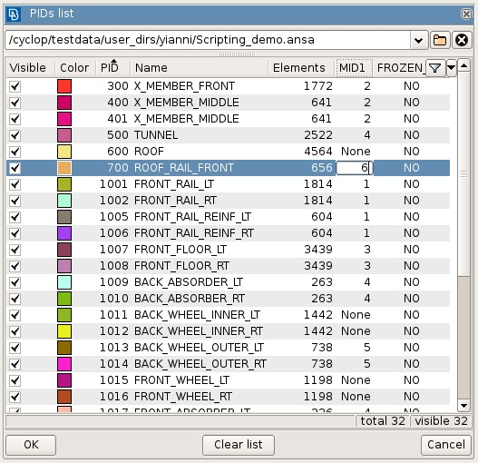
Number 6 was given as MID, which is an invalid value. After the ‘Enter’ button was pressed, the MID changed back to its original value and a warning appeared in the ‘BCItemViewInfoBox’, on the bottom left of the screen:
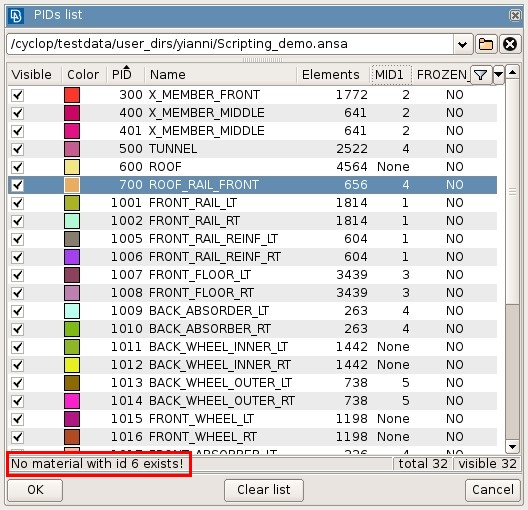
On double-click, the PSHELL card appears and the PSHELL settings can be changed. By clicking OK, the ‘BCListView’ is automatically updated:
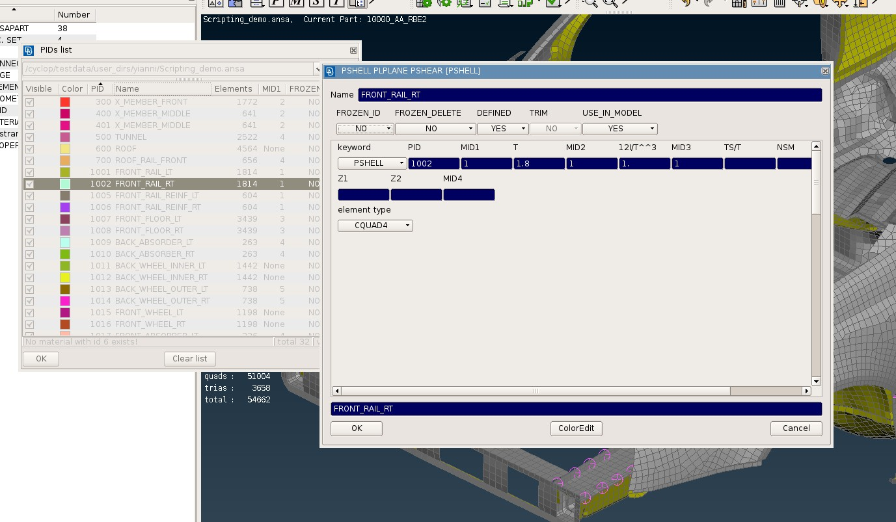
There is the option to open another ansa file, by clicking on the ‘folder’ icon next to the ‘BCLineEditPath’. By doing this, the new PIDs are automatically loaded into the ‘BCListView’:
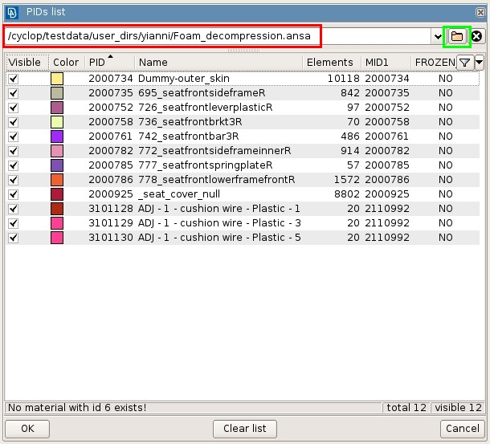
Advanced BCGUI functionality#
This example demonstrates how widgets can be placed inside container widgets, such as ‘BCDrawerGrids’, ‘BCToolBoxes’ and ‘BCTabWidgets’. It also demonstrates how the widgets’ state can be saved in the current xml file (apart from the ‘BCWindow’s’ position and size, which is done automatically) and retrieve it on demand. Finally, a few interesting ways of controlling and displaying data are shown.
For simplicity reasons most callback functions have been omitted.
A ‘BCWindow’ is created under the name ‘AutoSavingSettings’. It contains a ‘BCTabWidget’ with 2 tabs. The first contains a ‘BCToolBox’ and the other a ‘BCButtonLineEdit’ with a ‘BCPushButton’, a ‘BCGridLayout’ with 9 ‘BCPushButtons’, a ‘BCTextEdit’ and ‘BCLabelTicker’ (i.e. a ‘BCLabel’ is a label whose text can scroll when the mouse pointer is over it and it can be dragged to the left or to the right).
Only the first tab’s widgets’ state can be saved to and read from xml, that’s why the 2 extra buttons in ‘BCDialogButtonBox’ are enabled only when this tab is selected.
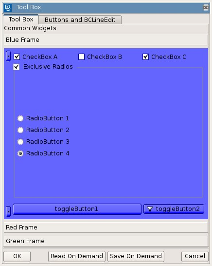 |
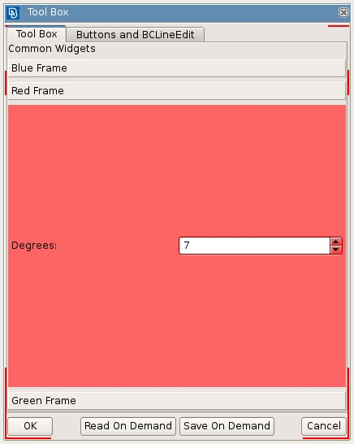 |
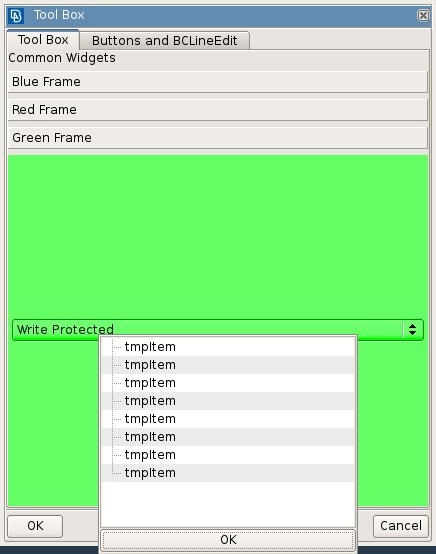 |
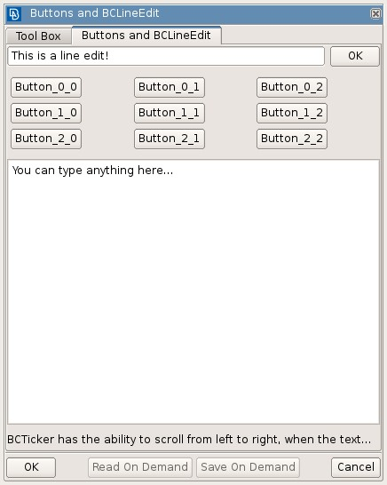 |
When the current tab changes, the ‘BCCaption’ of ‘BCWindow’ (the title) changes as well to the tab’s label. Nevertheless, its ‘BCName’ (‘AutoSavingSettings’) must never change and it must be unique, i.e. no other window with the same ‘BCName’ should exist in ANSA. The reason for this is that all settings are saved to the xml file under this name.
A control has been set for closing ‘BCWindow’s’ when pressing ‘Enter’. Normally, a window closes on ‘Enter’ unless a BCWindowSetCheckFunction or a BCWindowSetAcceptFunction are set. In this case the first one must be used, and the ‘BCWindow’s’ exit is controlled by the current value of the ‘BCSpinBox’ found in the “Red Frame”. If it is higher than 6, a warning appears in ANSA Info and the ‘BCWindow’ flashes and stays open.
Initially, the ‘BCComboBox’ in the “Green frame” has 3 options: ‘All’, ‘None’ and ‘Write Protected’. The first 2 operate as normal ‘comboBox’ options. If the last is selected a ‘BCPopupMenu’ appears, containing a hierarchical ‘BCListView’ and a ‘BCPushButton’ at the bottom. In this way any options offered by a ‘BCComboBox’ can be refined to the finest detail.
import ansa
from ansa import guitk
from ansa import constants
def tabChangedFun(tw, oldTab, newTab, window):
readOnDemand = guitk.BCGetUserDataKey(window, "readOnDemand")
saveOnDemand = guitk.BCGetUserDataKey(window, "saveOnDemand")
tab1 = guitk.BCGetUserDataKey(window, "tab1")
if tab1 == newTab:
e = True
else:
e = False
#Disable read and save button for second tab, since they are not applicable
guitk.BCSetEnabled(readOnDemand, e)
guitk.BCSetEnabled(saveOnDemand, e)
guitk.BCSetCaption(window, guitk.BCTabWidgetGetTabLabel(tw, newTab))
return 0
def radioButtonPressed(bgroup, index, data):
print("Radio Button Pressed:", str(index+1))
def comboBoxChanged(combo, index, popup):
if index == 2:
print(index)
guitk.BCPopupMenuPopup(popup)
def checkWindow(w, data):
spin = guitk.BCGetUserDataKey(w, "spin")
if guitk.BCSpinBoxGetInt(spin) > 6:
guitk.BCWindowFlash(w) #That's a flashy feature...
return "The spin box value is too high!"
return ""
def readSettingsOnDemand(b, window):
guitk.BCWindowReadControlSettings(window)
def saveSettingsOnDemand(b, window):
guitk.BCWindowSaveControlSettings(window)
def createToolBox(window, BCVBox_1):
BCLabel_1 = guitk.BCLabelCreate(BCVBox_1, "Common Widgets")
BCToolBox_1 = guitk.BCToolBoxCreate(BCVBox_1)
blueFrame = guitk.BCFrameCreate(BCToolBox_1)
BCBoxLayout_1 = guitk.BCBoxLayoutCreate(blueFrame, guitk.constants.BCVertical)
redFrame = guitk.BCFrameCreate(BCToolBox_1)
BCBoxLayout_2 = guitk.BCBoxLayoutCreate(redFrame, guitk.constants.BCHorizontal)
greenFrame = guitk.BCFrameCreate(BCToolBox_1)
BCBoxLayout_3 = guitk.BCBoxLayoutCreate(greenFrame, guitk.constants.BCHorizontal)
guitk.BCToolBoxInsertItem(BCToolBox_1, blueFrame, "Blue Frame", -1)
guitk.BCToolBoxInsertItem(BCToolBox_1, redFrame, "Red Frame", -1)
guitk.BCToolBoxInsertItem(BCToolBox_1, greenFrame, "Green Frame", -1)
guitk.BCSetBackgroundColor(blueFrame, 100, 100, 255)
guitk.BCSetBackgroundColor(redFrame, 255, 100, 100)
guitk.BCSetBackgroundColor(greenFrame, 100, 255, 100)
#BLUE FRAME
#create a drawer
drawer = guitk.BCDrawerGridCreate(blueFrame)
#create 3 check boxes
checkFrame = guitk.BCFrameCreate(drawer)
guitk.BCBoxLayoutCreate(checkFrame, guitk.constants.BCHorizontal)
checkBoxA = guitk.BCCheckBoxCreate(checkFrame, "CheckBox A")
checkBoxB = guitk.BCCheckBoxCreate(checkFrame, "CheckBox B")
checkBoxC = guitk.BCCheckBoxCreate(checkFrame, "CheckBox C")
#create a button group with radio buttons
bgroup = guitk.BCButtonGroupCreate(drawer, "Exclusive Radios", guitk.constants.BCVertical)
guitk.BCButtonGroupSetCheckable(bgroup, 1)
for i in range(4):
name = "RadioButton " + str(i+1)
rb = guitk.BCRadioButtonCreate(bgroup, name, None, None)
guitk.BCButtonGroupSetPressedFunction(bgroup, radioButtonPressed, None)
#create a button
buttonFrame = guitk.BCFrameCreate(drawer)
guitk.BCBoxLayoutCreate(buttonFrame, guitk.constants.BCHorizontal)
toggleButton1 = guitk.BCPushButtonCreate(buttonFrame, "toggleButton1", None, None)
guitk.BCRadioButtonAddManagedWidget(rb, toggleButton1, guitk.constants.BCManagedShow, guitk.constants.BCManagedHide)
toggleButton2 = guitk.BCToolButtonCreate(buttonFrame, "filter_16.png", "toggleButton2", None, None)
guitk.BCButtonSetToggleButton(toggleButton1, 1)
#add the widgets to the drawer
guitk.BCDrawerGridInsertWidget(drawer, checkFrame, 1, "CheckBoxes")
guitk.BCDrawerGridInsertStableWidget(drawer, bgroup)
guitk.BCDrawerGridInsertWidget(drawer, buttonFrame, 1, "Buttons")
#RED FRAME
guitk.BCLabelCreate(redFrame, "Degrees:")
spin = guitk.BCSpinBoxCreate(redFrame)
guitk.BCSetUserDataKey(window, 'spin', spin) #We will need this for the 'checkWIndow' function
#GREEN FRAME
comboBox = guitk.BCComboBoxCreate(greenFrame, ['All', 'None', 'Write Protected'])
#create a popupmenu
popup = guitk.BCPopupMenuCreate(comboBox)
popupFrame = guitk.BCFrameCreate(popup)
popupVbox = guitk.BCBoxLayoutCreate(popupFrame, guitk.constants.BCVertical)
guitk.BCBoxLayoutSetMargin(popupVbox, 0)
guitk.BCBoxLayoutSetSpacing(popupVbox, 0)
lview = guitk.BCListViewCreate(popupVbox, 1, ("",), True)
guitk.BCListViewSetResizeMode(lview, guitk.constants.BCLastColumn)
guitk.BCListViewHeaderSetVisible(lview, 0)
guitk.BCListViewSetIsRootDecorated(lview, 1)
guitk.BCListViewSetSelectionMode(lview, guitk.constants.BCMulti)
guitk.BCListViewSetSortingColumn(lview, 0, 1)
for i in range(8):
lvitem = guitk.BCListViewAddItem(lview, 1, ('tmpItem',), (0,))
ok_but = guitk.BCPushButtonCreate(popupVbox, "OK", None, None)
guitk.BCPopupMenuInsertWidget(popup, popupFrame)
#The callback function
guitk.BCComboBoxSetActivatedFunction(comboBox, comboBoxChanged, popup)
def createSecondTab(window, BCVBox_2):
#Create the line edit and the button
BCHBOX_1 = guitk.BCHBoxCreate(BCVBox_2)
le = guitk.BCLineEditCreate(BCHBOX_1, '')
guitk.BCPushButtonCreate(BCHBOX_1, 'OK', None, None)
#Create the grid with the buttons
grid = guitk.BCGridLayoutCreate(BCVBox_2, 3, 3)
for i in range(3):
for j in range(3):
button = guitk.BCPushButtonCreate(grid, 'Button_' + str(i) + '_' + str(j), None, None)
guitk.BCGridLayoutAddWidget(grid, button, i, j, guitk.constants.BCAlignVCenter + guitk.constants.BCAlignLeft)
#Create a text edit
guitk.BCTextEditCreate(BCVBox_2, '')
#Create a label ticker
guitk.BCLabelTickerCreate(BCVBox_2, 'BCTicker has the ability to scroll from left to right, when the text does not fit in the window.')
def main():
window = guitk.BCWindowCreate("Auto Saving Settings", guitk.constants.BCOnExitDestroy)
#Check on enter
guitk.BCWindowSetCheckFunction(window, checkWindow, None)
BCTabWidget_1 = guitk.BCTabWidgetCreate(window)
#Create the first tab
BCVBox_1 = guitk.BCVBoxCreate(BCTabWidget_1)
createToolBox(window, BCVBox_1)
#Create the second tab
BCVBox_2 = guitk.BCVBoxCreate(BCTabWidget_1)
createSecondTab(window, BCVBox_2)
#Insert the Tabs
guitk.BCTabWidgetInsertTab(BCTabWidget_1, BCVBox_1, "Tool Box", -1)
guitk.BCTabWidgetInsertTab(BCTabWidget_1, BCVBox_2, "Buttons and BCLineEdit", -1)
guitk.BCTabWidgetSetTabMovingEnabled(BCTabWidget_1, True)
guitk.BCTabWidgetSetCurrentTab(BCTabWidget_1, BCVBox_1)
guitk.BCSetCaption(window, 'Tool Box')
#Create a BCDialogButtonBox with the 2 extra buttons
dbb = guitk.BCDialogButtonBoxCreate(window)
readOnDemand = guitk.BCPushButtonCreate(dbb, "Read On Demand", readSettingsOnDemand, window);
saveOnDemand = guitk.BCPushButtonCreate(dbb, "Save On Demand", saveSettingsOnDemand, window)
guitk.BCDialogButtonBoxAddButton(dbb, readOnDemand)
guitk.BCDialogButtonBoxAddButton(dbb, saveOnDemand)
guitk.BCSetUserDataKey(window, 'readOnDemand', readOnDemand)
guitk.BCSetUserDataKey(window, 'saveOnDemand', saveOnDemand)
guitk.BCSetUserDataKey(window, 'tab1', BCVBox_1)
guitk.BCTabWidgetSetCurrentChangedFunction(BCTabWidget_1, tabChangedFun, window)
guitk.BCShow(window)
The complete source code of this example can be found here BCGUI - Tabs Example
BCGUI Designer#
General#
The designer is a tool that enables the easy generation of windows using a graphical user interface. The functions used for creating the interface belong to the BCGUI function group that was presented in the previous section. The great advantage of the designer is the automatic generation of code that reduces the preparation time of a script. The following paragraphs will focus in the presentation of the designer’s interface, without any particular emphasis on the BCGUI functions that are used in the background.
The Designer’s interface#
The designer is accessed through the Script Editor, by clicking on Tools>Designer. It’s initial launch interface , contains the following sections:
ToolBox
This is the window that hosts all the functions for creating widgets, layouts or items.
Constructed Items
This is a tree list with all created items.
Common Parameters
This window lists all the parameters that are common for each BCGUI item.
Parameters
This window displays all the parameters related to the selected item from the Constructed Items window.
CallBack Functions
This window hosts all the created callback functions.
Source Code
This is the area where the automatically created source code resides.
Help
This is the area where the documentation of the selected function is displayed.
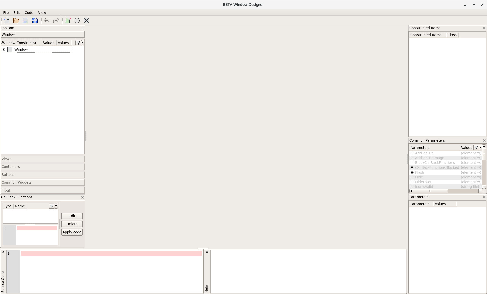
ToolBox#
The ToolBox is the starting point of all the actions performed in the BCGUI Designer. It hosts in separate tabs all the necessary functions for creating the main window, buttons, containers, views, widgets and input items. Initially, only the Window tab is active, since the first action is to create the window that will be used as the parent object of all the widgets. Expand the Window tree and press the Apply Settings button to create the main window with the name ‘TopWindow’.
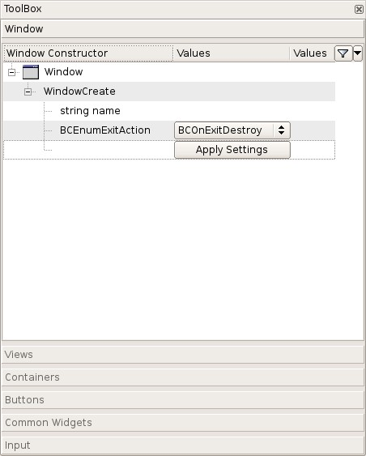
This will make the rest of the categories available.
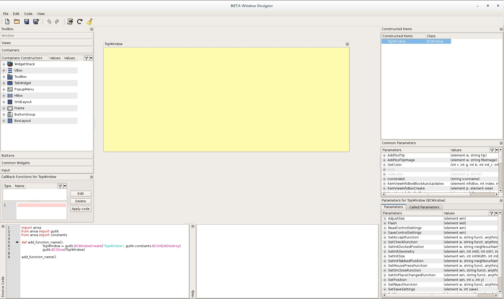
Expanding any object under any category will reveal a basic set of options, necessary for the creation of the object. These options are actually the input arguments of a BCGUI function and thus they are characterized by their type (integer, string, element etc) and their value. Initially, the options have the default values but they can be also set up by the user, except from those that are of element type. The button Apply Settings creates the object. In the following example a push button and a check box have been created under the top window.
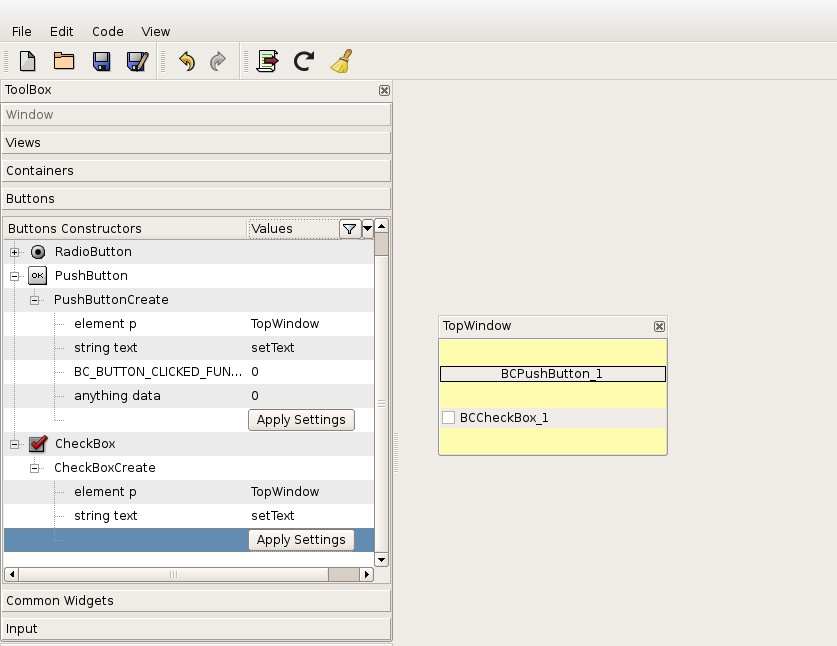
The parent object controls the objects’ order. As it is shown above, any object that is added directly to the top window is distributed vertically. To control the order of the objects, create a predefined horizontal or vertical box layout (HBox or VBox), or a BoxLayout with controllable orientation and add the widgets within it.
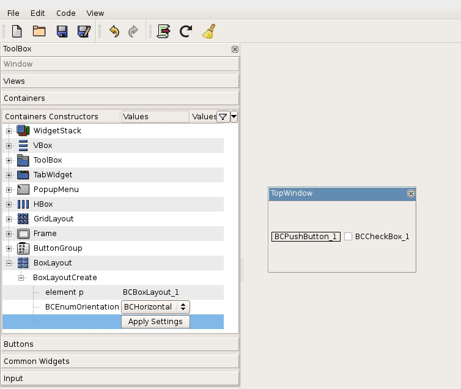
Constructed Items#
All the created objects are listed in the Constructed Items window. The list has a tree structure where it is easy to recognize any parent-child relationship or objects’ classes.
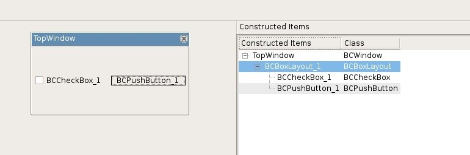
Actions like drag and drop are allowed and thus the position of an object can be altered at any time.
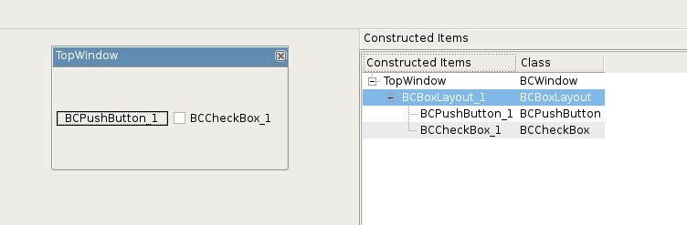
Selecting an object from the list, highlights the corresponding object of the TopWindow. On the contrary, by pressing <Ctrl+Left mouse button> on an object in the TopWindow, highlights the object in the list.
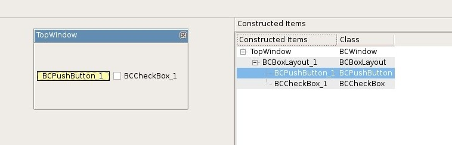
Any object can be deleted by right clicking on it and selecting the ‘Delete Item’ option.
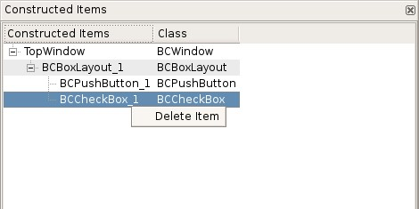
Common Parameters#
The Common Parameters window, lists all the options that are considered as common for every individual object. The name and the input arguments of the parameters are displayed in two separate columns.
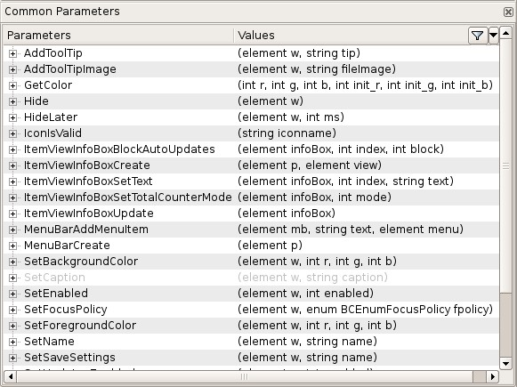
In order to change the default parameter options, expand the parameter and type where it is allowed the new value. At the end, press the Apply Settings button to confirm the changes. In the following image, a tooltip is going to be added for the button ‘BCPushButton_1’. Select the button from the Constructed Items window, or from the screen, and type the tooltip text under the Values column of the tip parameter. After confirmation, place the cursor over the button to see the created tooltip.
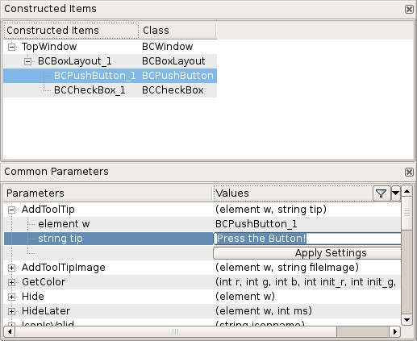 |
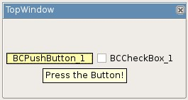 |
Parameters#
The Parameters window lists all the unique functions that can be applied on a selected object. As soon as an object is selected either from the screen or from the Constructed Items window, the title of the Parameters window and the actual parameters change accordingly. The following picture shows the Parameters window when the push button is selected. The name and the input arguments of the parameters are displayed in two separate columns.
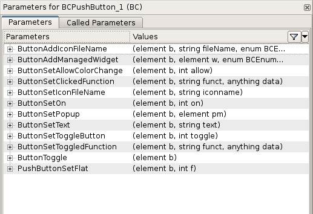
The name of each parameter describes its use. As in any other list of parameters, the corresponding options have the default values but they can get altered by the user. For example, in order to change the name of the button, expand the ‘ButtonSetText’ and type a new value for the option ‘text’. At the end, press the Apply Settings button to confirm the changes.
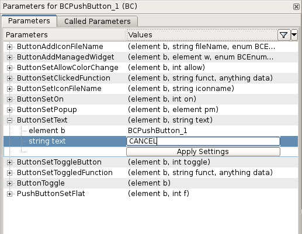 |
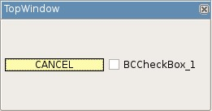 |
CallBack Functions#
All these functions from the Parameters widnow, whose name ends with ‘Function’, are used to set up the callback functions of the object. In order to find all the functions related to callback functions, activate the filter and type ‘function’ in the Parameters field:
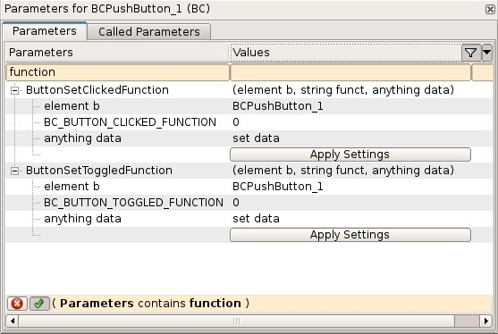
Two different callback functions have been filtered for the Push Button. The user can change any option according to his needs. When the Apply Settings button is pressed, the callback type and its name are automatically listed under the CallBack window. The title of the window indicates the parent object type:
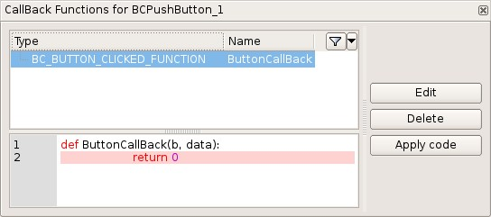
The last argument of all the callback functions can be of any type and corresponds to user data that are needed for the callback function to operate.
Help area#
Each parameter corresponds to a BCGUI function. By selecting a parameter either from the Common Parameters or from the Parameters window, displays the help text of the corresponding BCGUI function on the Help area.
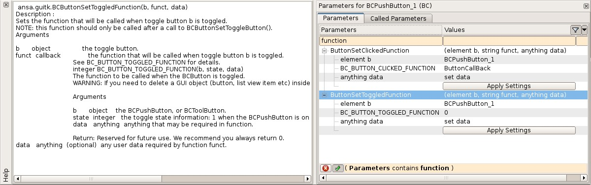
The help text of functions that set up callbacks, also contains the syntax of the callback. Thus, the user is also informed about the input arguments and the return values of it.
Source Code area#
The Source Code window is the area where the BCGUI Designer automatically constructs the code, as soon as an action is performed. An action is performed every time the Apply Settings button is pressed, or when the tree under the List With Constructed Items is updated with manual movements. The generated code consists of one main function and any number of callback functions.
The following image shows the source code that was automatically constructed, by performing all the actions mentioned previously:
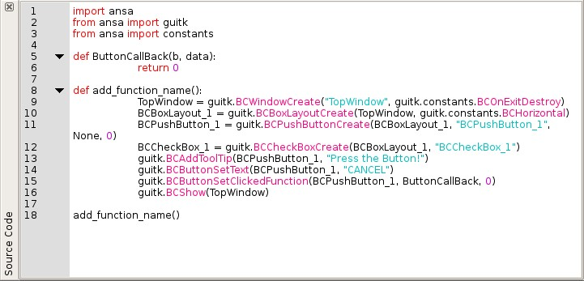
The source code is not editable and changes automatically only when an action is performed or when an object is deleted. However, it can be totally cleared without destroying the created window through the Code>Clear Source Code. The next time an action will be performed, the source code will be generated again.
Editing the source code#
The source code, including both the main function and the callback functions that are constructed by the designer tool, will probably be just a small part of an extensive script. The rest of the code must be manually added by the user through the script editor. The source code can be saved as any other script through the File>Save and can then be reopened by the script editor for further editing. Alternatively, it can be directly sent to the editor through the Code>Set Code to Script Editor.
Note
The designer cannot be used for opening scripts, unless it is free of user defined code.